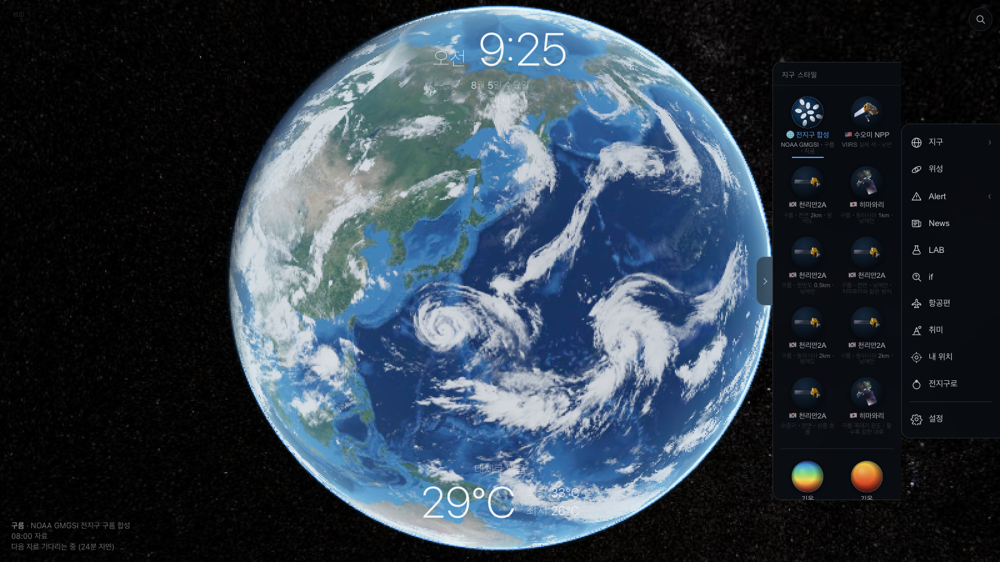
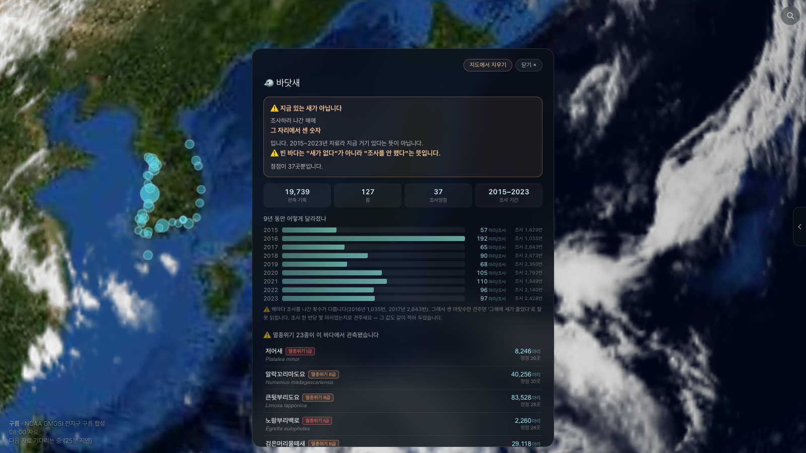
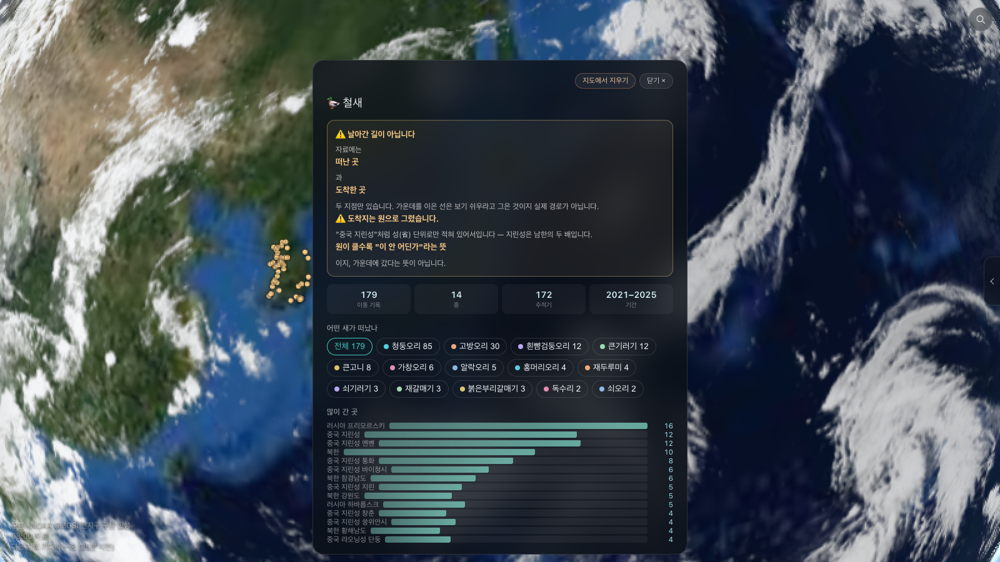
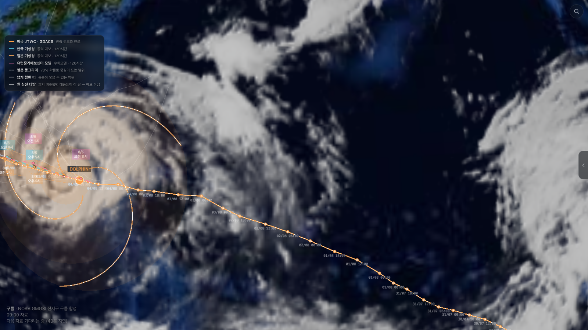
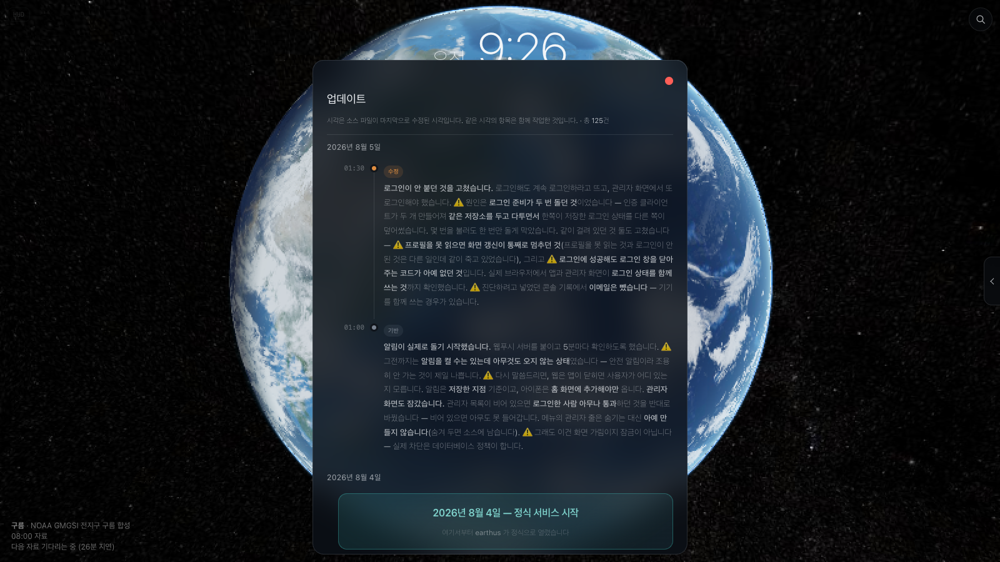
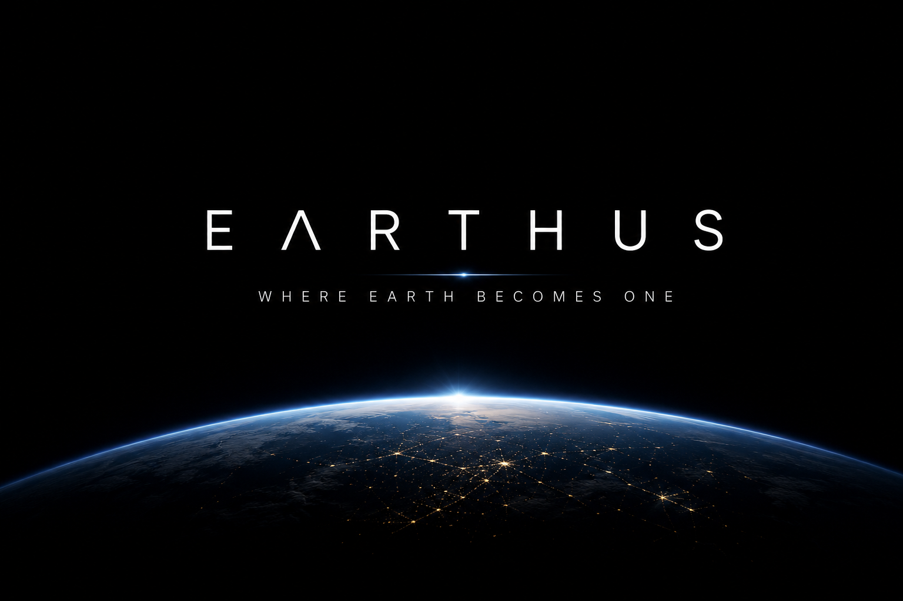
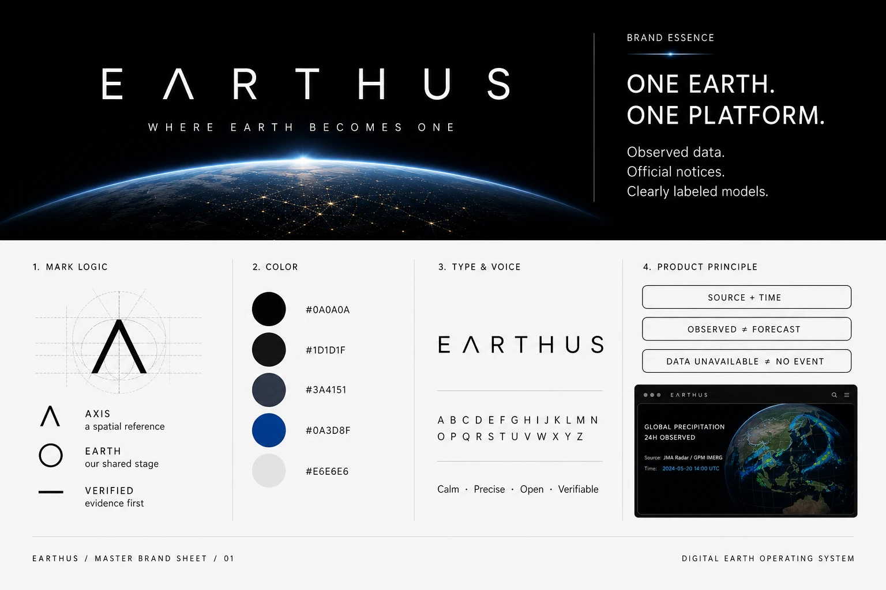
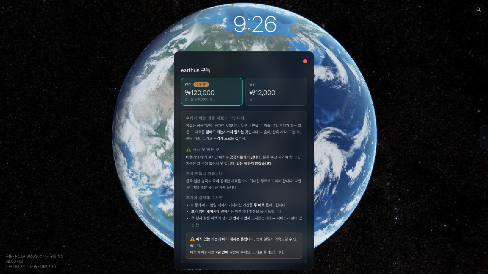

earthus — 지구를 믿을 수 있게 만드는 법

지구를 믿을 수 있게 만드는 법
공공자료로 8일 만에 만든 지구관측 서비스, 그리고 AI와 일한 기록
이 발표에서 다루는 것
무엇을 만들었나가 아니라
어떻게 판단했나
화면은 뒤에서 보여 드립니다. 앞쪽은 전부 “왜 그렇게 결정했나”입니다.
먼저 숫자부터
8일첫 커밋부터 오픈까지
138커밋
53자료 수집 Lambda
31,611화면 코드 줄 수 (JS)
125공개한 업데이트 기록
1사람
2026년 7월 28일 첫 커밋 → 8월 4일 정식 오픈. 사람 한 명 + AI 한 대.
1부
왜 만들었나
파고 1.2m 인 날, 해변은 닫혀 있었다
여는 장면
그날 파고는 1.2m 였다.
낮은 값이다. 들어가도 될 것처럼 보인다.
그런데 해변은 닫혀 있었다.
입수 통제는 파고가 아니라 이안류로 정한다.
그 자료가 화면에 없었다.
값은 있는데 판단의 근거가 없었다.
날씨 앱은 이미 많다
- 기온·강수·풍속을 보여주는 곳은 넘친다.
- 그런데 “이 숫자를 믿어도 되나”에 답하는 곳이 없다.
- 언제 잰 값인지, 어디서 잰 값인지, 몇 개를 잰 값인지 — 안 적혀 있다.
- 빈 화면이 “안전하다”는 뜻인지 “안 쟀다”는 뜻인지 구분이 안 된다.
⚠️ 이 마지막 줄이 이 서비스 전체의 출발점이다.
우리가 물은 것
값이 아니라
값의 근거를 보여줄 수 있나
이게 되면 만들고, 안 되면 안 만든다 — 그렇게 시작했다.
가진 것과 없는 것
- 가진 것 — 한국·일본·영국·미국의 공개 관측 자료, 그리고 8일.
- 없는 것 — 팀, 자체 관측망, 예보 모델, 광고 예산.
- 그래서 예보는 하지 않기로 했다. 기관 발표를 출처와 함께 전달한다.
- 그래서 관측을 만들지 않기로 했다. 남이 잰 값을 정직하게 보여준다.
할 수 없는 일을 먼저 못 박고 시작했다. 그게 나머지를 전부 정해 줬다.
2부
무엇을 만들었나
설치 없는 3D 지구 하나
지구 한 장
브라우저에서 바로 열린다. 왼쪽 아래에 늘 출처와 관측 시각이 붙어 있다 — 이 자리는 어느 화면에서도 비지 않는다.
레이어 — 지구 위에 겹쳐 본다
- 구름·기온·바람·습도·기압
- 위성 — 천리안2A(한국), 히마와리(일본), 수오미 NPP(미국)
- 특보·지진·쓰나미·낙뢰·산불·태풍
- 대기질·조위·해양 관측소
- 생물 — 바닷새·철새·바다거북

위성 칸의 그림은 실제 그 위성의 사진이다. 아무 동그라미나 넣지 않았다.
생물 자료 세 종 — 전부 실측 건수
19,739바닷새 관측 기록 (2015–2023)
127바닷새 종
37바닷새 조사 정점
179철새 이동 기록 (2021–2025)
14철새 종
1,085,606에코뱅크 생물 기록
화면에 나오는 숫자와 여기 숫자는 같은 값이다. 발표용으로 따로 만들지 않았다.
바닷새 — 9년 동안 어떻게 달라졌나

⚠️ 맨 위 상자를 먼저 읽어 주세요 — “빈 바다는 새가 없다가 아니라 조사를 안 했다는 뜻입니다.” 이 문장이 이 서비스가 파는 것이다.
철새 — 떠난 곳과 도착한 곳

⚠️ “날아간 길이 아닙니다.” 자료에는 두 지점만 있다. 가운데 선은 보기 쉬우라고 그은 것이다. 도착지가 성(省) 단위면 점이 아니라 원으로 그렸다.
태풍 — 네 개의 선을 겹쳐 보여준다

한국 기상청·일본 기상청의 공식 예보, 미국 JTWC 의 관측·진로(GDACS 제공), 유럽중기예보센터 모델 — 세 나라 기상 기관과 모델 하나. 기관이 다르면 선도 따로 그린다, 평균 내지 않는다. 선이 벌어질수록 그만큼 불확실하다는 뜻이고, 그 벌어짐도 정보다.
모든 값에 붙는 세 가지
- 출처 — 어느 기관의 어느 자료인가
- 관측 시각 — 언제 잰 값인가 (예보가 아니라 관측)
- 표본 수(n) — 몇 개를 세서 나온 값인가
- 그리고 기준값이 있으면 그 기준을 우리가 정했다는 사실까지 같이 적는다.
이 네 줄이 없으면 화면에 안 올린다는 게 규칙이었다.
웹으로 만들었다
- 설치가 없다. 주소만 있으면 열린다.
- 심사가 없다. 고친 걸 그날 올린다 — 8일 동안 125번 올렸다.
- 검색과 AI 가 읽을 수 있다.
- ⚠️ 대신 대가가 있다 — 폰의 발열, 알림, 그리고 결제. 3부와 7부에서 다룬다.
3부
어떻게 판단했나
사례 12개 — 전부 실제로 겪은 것
각 장은 세 줄입니다. 이렇게 보였다 → 실제로는 이랬다 → 그래서 이렇게 했다.
사례 1
천리안이 안 보인다
이렇게 보였다일본 히마와리에는 구름이 보이는데 우리 천리안 화면은 비어 있었다. 같은 시각, 15분 차이. 위성 성능이 떨어지는 것처럼 보였다.
실제로는채널 문제였다. 히마와리는 가시광, 천리안 쪽은 적외(온도)를 쓰고 있었다. 낮은 구름은 꼭대기가 지표만큼 따뜻해서 적외로는 원리상 안 잡힌다. 실측해 보니 서울 위 구름이 지표보다 5°C도 차지 않았다.
그래서같은 위성의 가시광을 전면으로 넓혔다. 자료를 바꾼 게 아니라 채널을 바꿨다.
⚠️ 장비 탓으로 보인 것이 설정 탓이었다
사례 2
8km 와 0.5km 사이가 비어 있었다
이렇게 보였다위성 화면이 한반도(0.5km)와 전지구(8km) 두 가지뿐이었다. 쓸 만해 보였다.
실제로는태풍이 오키나와쯤 있을 때가 정확히 그 빈 구간이었다. 한반도 화면에는 안 들어오고, 전지구 화면에서는 점이다.
그래서동아시아 2km 를 새로 만들어 끼웠다. 빈 구간은 “없는 기능”이 아니라 “제일 필요할 때 안 보이는 것”이었다.
필요한 축척은 평상시가 아니라 사고 때 정해진다
사례 3
2016년에 바닷새가 늘었나?
이렇게 보였다연도별 관측 마릿수를 그렸더니 2016년이 유난히 튀었다. 그 해에 새가 많았던 것처럼 보였다.
실제로는조사를 나간 횟수가 해마다 다르다. 2016년 1,035번, 2017년 2,843번. 원값 막대는 새의 수가 아니라 조사 노력을 그린 것이었다.
그래서조사 횟수로 나눴다. 그랬더니 2016년이 192마리/조사로 9년 중 최고가 맞았다 — 다만 이유가 달랐다. 나눈 값과 조사 횟수를 화면에 같이 적었다.
⚠️ 우연히 결론이 같아도 근거가 틀렸으면 틀린 것이다
사례 4
왜가리가 멸종위기 I급으로 나왔다
이렇게 보였다왜가리는 논이나 하천에서 흔히 보이는 새다. 그게 I급으로 찍혔다. 자료가 통째로 이상한 줄 알았다.
실제로는세어 보니 왜가리 1,961줄 중 등급이 적힌 줄이 딱 1줄(0.05%)이었다. 오타 한 줄이 종 전체를 물들이고 있었다.
그래서“한 줄이라도 있으면 등급”을 버렸다. 하지만 다음 장이 진짜 문제였다.
흔한 것이 희귀하게 나오면 자료가 아니라 규칙을 의심한다
사례 5
다수결로 걸렀더니 진짜가 떨어졌다
이렇게 보였다“줄 절반 이상에 등급이 있어야 등급으로 인정” — 깔끔해 보이는 규칙이었다.
실제로는실제 멸종위기 II급인 세 종이 통째로 떨어졌다. 희귀한 새일수록 관측 줄 수가 적어서 다수결에 불리하다. 규칙이 거꾸로였다.
그래서“2줄 이상 그리고 5% 이상”으로 바꿨다. 그리고 이 임계값은 우리가 정한 것이라, 각 종마다 몇 줄 중 몇 줄이었는지를 화면에 같이 내보낸다.
⚠️ 우리가 정한 기준은 기준값까지 공개한다
사례 6
108만 건 중 27만 건이 사라졌다
이렇게 보였다에코뱅크 자료 1,085,606건을 받았는데 지도에 올라간 건 806,219건. 279,284건(25.7%)이 없어졌다. 우리 코드가 잘못된 줄 알았다.
실제로는값을 직접 찍어 봤다. “위치 없음”을 뜻하는 가짜 좌표가 두 가지 있었다. ① 정확히 36.0000N 124.0000E — 서해 한가운데 빈 바다. ② 2⁶⁴ 근처의 거대한 값 — -1(값 없음)을 부호 없는 정수로 잘못 읽은 것.
그래서버린 게 아니라 원래 위치가 없는 자료였다. “버림 103건 / 위치 없음 279,284건”으로 나눠서 화면에 적었다.
⚠️ 버린 수를 감추지 않는다
사례 7
우리 경계가 우연히 막아 줬다
이렇게 보였다①번 가짜 좌표(36.0N 124.0E)는 어차피 화면에 안 나왔다. 문제없어 보였다.
실제로는우리 지도 경계가 124.5°E 부터라서 걸러진 것이었다. 실력이 아니라 운이었다. 경계를 조금만 넓혔으면 405건이 서해 한가운데 점으로 찍혔을 것이다.
그래서글자로 맞추지 않고 값으로 걸렀다. 그리고 이런 “운으로 막힌 것”을 찾는 게 점검의 목적이라는 걸 규칙으로 적었다.
⚠️ 안 터진 것과 안전한 것은 다르다
사례 8
조사 정점이 72곳이 아니라 37곳이었다
이렇게 보였다바닷새 자료의 정점 코드를 세니 72곳이 나왔다. 그대로 “72개 정점”이라고 쓸 뻔했다.
실제로는EB-01 과 EB01 이 같은 곳이었다. 기관에서도 표기가 섞여 있었다.
그래서코드를 정규화해서 합쳤다. 37곳이 맞다. 안 합쳤으면 같은 자리에 점이 두 번 찍히고 “72곳”이라는 틀린 숫자가 그대로 나갔을 것이다.
세기 전에 같은 것인지부터 본다
사례 9
백두대간이 1도 옆에 찍혔다
이렇게 보였다좌표를 변환해 올렸더니 산줄기가 엉뚱한 데 그어졌다. 변환 코드를 의심했다.
실제로는좌표계가 EPSG:5186 인데 5174 로 읽고 있었다. 둘은 약 1°, 100km 차이다. 5186 으로 다시 풀었더니 선이 실제 백두대간 위에 정확히 얹혔다.
그래서검증을 “그림이 그럴듯한가”가 아니라 “아는 지형과 겹치는가”로 바꿨다. 백두대간은 답을 아는 자료라 시험지로 쓸 수 있었다.
⚠️ 정답을 아는 자료를 하나 끼워 두면 변환 오류가 스스로 드러난다
사례 10
선이 안 보여서, 더 비싼 방법으로 바꿨다
이렇게 보였다철새 이동선과 도착지 원이 화면에 안 나왔다. 그리는 방식이 틀린 줄 알았다.
실제로는화면을 필요할 때만 다시 그리는 설정(requestRenderMode) 때문이었다. 선은 여러 프레임에 걸쳐 만들어지는데 한 번만 그리라고 시켰던 것이다.
그래서⚠️ 여기서 한 번 잘못 고쳤다 — 지형에 딱 붙이는 방식으로 바꿨더니 보이긴 했지만 아이폰이 뜨거워졌다. 되돌리고, 원인대로 “잠깐 계속 그리기”로 고쳤다.
⚠️ 증상이 사라졌다고 원인을 고친 게 아니다
사례 11
설명 글이 통째로 죽어 있었다
이렇게 보였다점을 눌러도 설명이 안 떴다. 글을 안 넣은 줄 알고 계속 채워 넣었다.
실제로는지도 라이브러리의 설명 상자를 처음부터 꺼 두는 설정이었다. 설명을 아무리 잘 써도 표시될 곳이 없었다. 283개가 그 상태였다.
그래서설명을 우리 방식(눌렀을 때 뜨는 짧은 말풍선)으로 전부 옮겼다.
안 보이는 것과 없는 것을 먼저 구분한다
사례 12
결제 키가 두 번 붙었다
이렇게 보였다결제창이 “판매하지 않는 상품”이라며 열리지 않았다. 가맹점 설정 문제로 보였다.
실제로는오류 주소에 들어 있던 값을 풀어 보니 키가 test_ck_test_ck_… 였다. 내가 넣으라고 준 예시가 test_ck_여기에 였고, 그 위에 키를 통째로 붙이면서 접두사가 두 번 들어간 것이다. 내 지시가 원인이었다.
그래서예시를 <키를 그대로 붙여넣기> 형태로 바꿨다. 그리고 오류 주소를 풀어 보는 걸 첫 수순으로 삼았다 — 답이 이미 거기 있었다.
⚠️ 사람이 틀리게 만들어 놓고 사람 탓을 하지 않는다
사례 12개를 관통하는 것
열두 번 중 열두 번,
값을 직접 찍어 봤을 때 원인이 나왔다
추측으로 맞힌 적은 한 번도 없었다.
4부
AI 와 어떻게 일했나
사람 1 + AI 1 로 8일
자랑이 아니라 방법으로 적습니다. 잘된 것과 안 된 것 둘 다.
전 과정을 Claude Code 와 함께 만들었다
- 자료 조사, 설계, 코드, 배포, 약관까지 한 창에서 진행했다.
- 사람이 한 일 — 무엇을 만들지 정하고, 무엇을 확인할지 정하고, 결과를 판정한다.
- AI 가 한 일 — 자료 구조 파악, 기관마다 다른 API 껍데기 흡수, 코드 작성, 검증 실행.
- 8일 · 138 커밋 · 53개 수집 함수 · 31,611줄.
모델을 나눠 썼다
Fable 5초기 기획 단계- 무엇을 만들 것인가
- 어떤 자료를 쓸 것인가
- 화면 구조와 메뉴 얼개
- 요금제와 공개 범위
기획에는 Fable 5 가 적당하다고 판단했다.
Opus 5코딩 · 개발 단계- 실제 코드 작성과 수정
- 자료 해석과 함정 추적
- 법·라이선스 검토
- 배포와 장애 대응
판단이 필요한 구간은 Opus 5 로 갔다.
⚠️ 전환은 늘 먼저 알리고 했다. 모르는 사이에 바뀌면 결과를 믿을 수 없다.
왜 기획에 Fable 5 였나
- 기획 단계에서 필요한 건 정답이 아니라 선택지다.
- “이 자료로 뭘 할 수 있나”를 넓게 펴 보는 데 잘 맞았다.
- 이 단계에서는 코드를 안 쓴다. 틀려도 비용이 문서 한 장이다.
- ⚠️ 반대로 값을 직접 확인해야 하는 일에는 쓰지 않았다.
왜 코딩·개발에 Opus 5 였나
- 여기서부터는 틀리면 화면에 그대로 나간다.
- 3부의 사례 12개는 전부 이 단계에서 나왔다 — 원인을 좁혀 들어가는 일이다.
- 여러 기관의 API 가 껍데기가 다 다르다. 한 번에 흡수해야 진도가 나간다.
- 약관·개인정보·라이선스처럼 틀리면 법이 되는 것도 이쪽에 뒀다.
AI 가 잘한 것
- 처음 보는 자료의 구조를 빠르게 파악한다 — 필드 이름만 봐도 어떤 함정이 있을지 짚는다.
- 기관마다 다른 응답 껍데기를 한꺼번에 흡수한다. (어떤 곳은 항목이 하나면 배열이 아니라 그냥 값으로 온다)
- 같은 함정을 두 번 안 밟게 코드에 “왜 이렇게 했는지”를 남긴다.
- 밤에 혼자 오래 걸리는 작업을 끝까지 돌린다.
⚠️ AI 가 틀린 것 — 그대로 적는다
- 원이 안 보이자 원인을 잘못 짚고 더 비싼 방식으로 바꿨다 → 아이폰이 뜨거워졌다. (사례 10)
- 확인하지 않고 명령을 줬다 → 권한이 없어 실패했다.
- 붙여넣기 예시를 잘못 줘서 결제 키가 두 번 붙게 만들었다. (사례 12)
- 로그인이 안 붙는 원인을 세 번 잘못 짚었다. 진짜 원인은 네 번째에 나왔다 — 로그인 준비가 두 번 돌아 인증 클라이언트가 두 개 만들어져 있었다.
⚠️ 이게 더 중요합니다. 이 목록이 없으면 앞의 자랑도 믿을 수 없습니다.
그래서 생긴 규칙
값을 찍어 보기 전에
원인을 말하지 않는다
3부의 함정 열두 개를 전부 이 방법으로 잡았다.
주석이 곧 인수인계다
- “왜 이렇게 했는지”를 코드에 남기면 다음에 같은 자리에서 안 헤맨다.
- ⚠️ 실제로 “지형에 붙이기 금지”라는 주석이 이미 있었다. 그걸 어겼고, 폰이 뜨거워진 뒤에야 알았다.
- 되돌린 다음, 왜 금지인지를 한 줄 더 붙여서 다시 적었다.
- AI 와 일할수록 주석이 더 중요해진다 — 다음 대화의 AI 는 오늘을 기억하지 못한다.
커밋 메시지를 이력으로 썼다
- “무엇을 고쳤나”가 아니라 “무엇이 잘못돼 있었나”를 적었다.
- 예 — “관리자 — 목록이 비어 있으면 아무도 못 들어간다”
- 예 — “로그인 — auth.init() 이 두 번 돌던 것을 막았다”
- 이 문장들이 그대로 사용자에게 보이는 업데이트 기록이 됐다. 125건.
- 고친 내용을 감추지 않는 게 3부의 원칙과 같은 원칙이다.

4부 결론
AI 는 답을 주는 도구가 아니라
가설을 빨리 버리게 해 주는 도구다
사람이 할 일은 “무엇을 확인할 것인가”를 정하는 것이다.
① 예보하지 않는다
- 우리는 관측을 전달한다. 예보는 기관이 한다.
- 기관 발표는 출처와 발표 시각을 붙여서 그대로 전달한다.
- “내일 비 올 것 같아요” 같은 문장을 우리가 만들지 않는다.
- ⚠️ 할 수 있어도 안 한다 — 틀렸을 때 책임질 수 없는 말이다.
② 안전 정보는 언제나 무료
- 특보 · 지진 · 쓰나미 · 이안류 · 낙뢰.
- 요금제 항목이 아니라 원칙이라서 코드에 박아 뒀다.
- 돈을 받는 순간 “돈 낸 사람만 대피한다”가 된다.
- 2026년 8월 4일 오픈 시점에는 전 기능이 무료다.
③ 모르는 것을 모른다고 적는다
- “이안류 관측은 전국 10곳뿐 — 빈 해변은 안전한 게 아니라 자료가 없는 것입니다”
- “빈 바다는 새가 없다가 아니라 조사를 안 했다는 뜻입니다”
- 빈 화면에 아무 말도 안 쓰면 사람은 “괜찮다”로 읽는다.
⚠️ 알 수 있는데 모른다고 말하는 것이 자료가 없는 것보다 나쁘다.
④ 지어내지 않는다
- 철새 도착지가 성(省) 단위로만 적혀 있으면 점이 아니라 원으로 그린다.
- 지린성은 남한의 두 배다. 점으로 찍으면 “여기 갔다”는 거짓말이 된다.
- 원이 클수록 “이 안 어딘가”라는 뜻이고, 가운데에 갔다는 뜻이 아니라고 적었다.
- 두 지점 사이의 선도 “날아간 길이 아니다”라고 화면에 적었다.
⑤ 버린 것을 밝힌다
- 에코뱅크 108만 건 중 위치가 없어 못 쓴 279,284건을 화면에 적는다.
- 정말로 버린 103건도 따로 적는다.
- 임계값을 우리가 정했으면 그 값과 근거를 같이 내보낸다.
- 숨기면 당장은 깔끔해 보이지만, 한 번 들키면 나머지 전부를 의심받는다.
무엇을 파는가
자료가 아니라
“그 자료를 믿어도 되는지”를 판다
같은 공공자료를 쓰는 곳은 많다. 한계까지 적는 곳은 드물다.
브랜드 — EARTHUS

Where Earth Becomes One — 지구가 하나 되는 곳. 이 브랜드 이미지는 ChatGPT 로 만들었다.
브랜드 시트 — 4번 칸을 봐 주세요

⚠️ 오른쪽 「PRODUCT PRINCIPLE」 세 줄이 이 발표의 3부·5부 그대로다 — 출처+시각 · 관측≠예보 · 자료 없음≠사건 없음. 브랜드가 로고와 색이 아니라 「무엇을 하지 않는가」로 적혀 있다. 이 시트는 ChatGPT 로 만들었다 — 어떤 도구로 만들었는지 숨기지 않는다.
릴스 · 쇼츠 (1080×1920) — 확산에 제일 좋다
- 지구가 실제로 움직이는 것이 그대로 콘텐츠다.
- 태풍 회전 · 구름 흐름 · 위성이 지구를 훑고 지나가는 장면 · 일식 그림자.
- 연속 캡처를 이어 붙여 영상으로 만든다. 자막은 짧게 한 줄.
- ⚠️ 나레이션에 예보를 넣지 않는다 — 화면 원칙과 같은 원칙이다.
X · 스레드 — 카드뉴스와 화면 캡처
- 3부의 이야기가 그대로 소재다.
- “왜가리가 멸종위기로 나온 이유” — 오타 한 줄이 종 전체를 물들인 이야기.
- “2016년에 새가 늘어난 게 아니라 조사를 덜 나간 것이었다”
- “108만 건 중 27만 건이 사라진 이유” — 가짜 좌표 두 가지.
- 설명이 곧 신뢰다. 기능 자랑보다 함정 이야기가 더 멀리 간다.
⚠️ 자동으로 게시하지 않는다
- 화면 오류는 고치면 되지만 게시물은 이미 퍼진 뒤다.
- 실제로 하루 만에 경도 부호 오류와 파고 축소 오류를 찾았다. 그날 자동 게시가 켜져 있었으면 둘 다 나갔을 것이다.
- 초안까지는 자동으로 만들고, 올리는 손은 사람이 댄다.
첫 30일
- 주 3회 릴스 — 태풍·구름·위성 궤도 중 그날 실제로 볼 만한 것.
- 주 2회 카드뉴스 — 3부 사례를 하나씩 푼다.
- 특보가 뜬 날은 그날의 화면을 그대로 올린다. 만들 필요가 없다.
- ⚠️ 유입보다 “한 번 본 사람이 다시 오는가”를 본다.
지금 어디까지 왔나
- 2026년 8월 4일 정식 오픈. 전 기능 무료.
- 유료는 통신판매업 신고를 마친 뒤에 연다 — 신고 전에는 코드에서 잠가 뒀다.
- ⚠️ 비행기·배 실시간은 공공자료가 아니라 사와야 한다. 있는 척하지 않는다.
- 다음 — 에코뱅크 생물 화면, 야간 저층운, 공공자료 라이선스 전수 점검.

닫는 말
값을 보여주는 앱은 많다.
우리는 그 값의 한계까지 보여준다
earthus.net · 달루어(dalur) · 김정우
부록
시연과 여분 사례
시간이 남으면 / 질문이 나오면
시연 (4분)
- ① 지구를 돌린다 → 내 위치 → 오늘 날씨 한 문장 (매일, 위치마다 바뀐다)
- ② 레이어를 켠다 → 천리안 · 히마와리 · 수오미를 나란히 비교
- ③ 취미 → 철새 → 선을 눌러 “고방오리 · 부산 을숙도 → 러시아 프리모르스키”
- ④ 왼쪽 아래 출처 표시 — 어느 화면에도 출처와 시각이 있다
⚠️ 인터넷이 안 되는 자리면 미리 찍은 영상으로 대체할 것.
사례 13
[여분] 아이폰에서 두 손가락 확대가 안 됐다
이렇게 보였다아이폰에서 확대·축소를 하고 나면 그 뒤로 잘 안 됐다. 두 손가락으로 벌려도 한 손으로 미는 것처럼 동작했다.
실제로는지구가 놓인 칸에 터치 처리 규칙이 없어서 사파리가 자기 방식대로 제스처를 가로챘다. 사파리는 “확대 금지” 설정을 무시한다.
그래서지구 칸에만 터치 규칙을 명시했다. 데스크톱에서는 재현되지 않던 문제라, PD 가 실제 아이폰에서 겪은 말이 유일한 단서였다.
⚠️ 내 기기에서 안 나는 버그가 없는 버그는 아니다
사례 14
[여분] 로그인이 안 붙었다 — 네 번째에 나온 원인
이렇게 보였다로그인을 해도 계속 로그인하라고 떴다. 브라우저를 껐다 켜도 같았다.
실제로는원인을 세 번 잘못 짚었다. ①설정 누락(실제로는 있었다) ②권한 함수 오류(진짜였지만 안 쓰이는 코드였다) ③주소 형식. 진짜 원인은 로그인 준비가 두 번 돌아 인증 클라이언트가 두 개 만들어진 것이었다 — 둘이 같은 저장소를 두고 서로 덮어썼다.
그래서여러 번 불러도 한 번만 돌게 막았다. 그리고 로그인에 성공해도 로그인 창을 닫아 주는 코드가 아예 없었던 것까지 같이 고쳤다.
⚠️ 증상이 하나여도 원인은 셋일 수 있다
예상 질문
- “공공자료면 누구나 쓸 수 있는데 뭐가 다른가” → 3부(18–31장)와 5부(43–48장)가 그 답입니다.
- “AI 가 다 만들었나” → 무엇을 확인할지는 사람이 정했습니다. 4부(32–42장) — 모델 구분은 34장, 결론은 42장.
- “8일이면 대충 만든 것 아닌가” → 함정 12개를 그 8일 안에 잡았습니다. 사례 12개는 19장부터 30장까지.
- “수익은?” → 안전 정보는 계속 무료입니다(45장). 유료는 신고 후에 엽니다(58장).